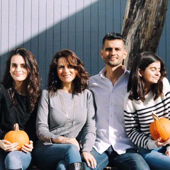

Oklahoma

Pastor Oscar and Liz Aguilera
Leaders of Dos Mejor Que Uno, helping couples and families at Iglesia Hispana Victory Church
Pat Carr
Author / Home Builder / Decorator / Image Consultant / Motivational Speaker
On the board of Oklahoma Commission on the status of women.
Author of “All Dreams Matter: Laws for Success from Science & Scripture”
“Because You Can,” is a video that follows Carr as she mentors three women in transition from prison.
Click here to watch video

Catherine Ligard
Vidar and Cathrine Ligard are the founders and executive directors of Safari Mission. They work on reversing the dependency syndrome that plagues Africa, and teach people to come out of poverty and to fix their broken systems.
Faith City Outreach Podcasts